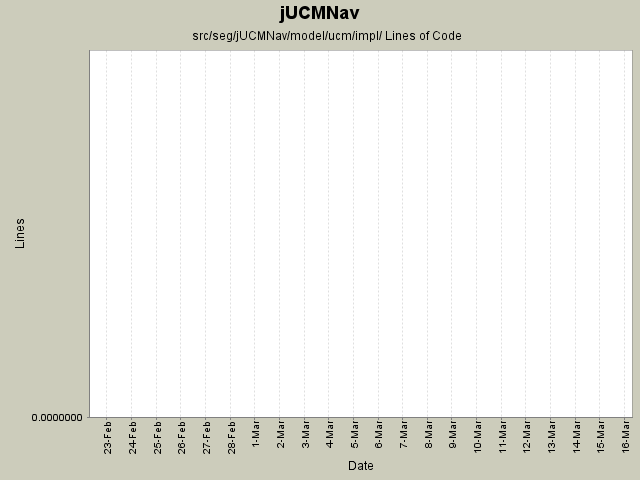

Module src/seg/jUCMNav/model/ucm/impl/
back to main page
Summary Period:
2005-02-22 to
2005-03-15
Modules
[root]/src/seg/jUCMNav/model/ucm/impl
Lines of Code

Total Lines Of Code:
0 (2006-03-31 18:01)
Authors
| Author |
Changes |
Lines of Code |
Lines per Change |
| etremblay |
38 (100.0%) |
0 (-) |
0.0 |
Most Recent Commits
-
etremblay
2005-03-15 21:05
-
0 lines of code changed in:
-
src/seg/jUCMNav/model/ucm/impl:
ComponentImpl.java (del),
EndPointImpl.java (del),
ForkImpl.java (del),
LinkImpl.java (del),
NodeImpl.java (del),
PathImpl.java (del),
ResponsibilityImpl.java (del),
SizedElementImpl.java (del),
StartPointImpl.java (del),
UcmDiagramImpl.java (del),
UcmFactoryImpl.java (del),
UcmPackageImpl.java (del),
XYElementImpl.java (del)
-
etremblay
2005-02-25 16:29
-
0 lines of code changed in:
-
src/seg/jUCMNav/model/ucm/impl:
ComponentImpl.java (changed),
EndPointImpl.java (changed),
ForkImpl.java (changed),
LinkImpl.java (new),
NodeImpl.java (changed),
PathImpl.java (changed),
ResponsibilityImpl.java (changed),
SizedElementImpl.java (changed),
StartPointImpl.java (changed),
UcmDiagramImpl.java (changed),
UcmFactoryImpl.java (changed),
UcmPackageImpl.java (changed),
XYElementImpl.java (changed)
-
etremblay
2005-02-22 16:48
-
0 lines of code changed in:
-
src/seg/jUCMNav/model/ucm/impl:
ComponentImpl.java (new),
EndPointImpl.java (new),
ForkImpl.java (new),
NodeImpl.java (new),
PathImpl.java (new),
ResponsibilityImpl.java (new),
SizedElementImpl.java (new),
StartPointImpl.java (new),
UcmDiagramImpl.java (new),
UcmFactoryImpl.java (new),
UcmPackageImpl.java (new),
XYElementImpl.java (new)